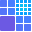

Upscaler
Identity study · Subdivision

Lockup

UpscalerOn light and dark
Small sizes
Concept
The mark is a quadtree caught mid-refinement. A square splits 2×2, and every cell whose center lies within 1¼ of its own width of the focal point, the middle of the top-right quadrant, splits again. From one square that single rule draws 49 tiles: one coarse block, two 2×2 groups and a quadrant that keeps resolving, nested like an Albers Homage to the Square, down to tiles 1/32 the width of the square. Coarse at the bottom left, detail gathering at the top right: an image gaining resolution.
Color follows depth along a violet-to-cyan ramp, so the hue shifts with every split and the app's blue sits mid-ramp. Corners are rounded at 8% of each tile, soft where coarse and crisp where fine. The gutters are transparent, so the page is the grout and one version serves light and dark.
icon.svg is the same tree cut at tiles 1/8 the width, each merged tile painted the mean color of what it holds and snapped to a 32px grid. The logo is that icon upscaled 4×. Use the icon at 64px and below.
In motion, a seed square is enlarged 2×, then 4×, then splits five times, coarse to fine. Each child starts as its quarter of the parent, in the parent's color, before its gutter opens and its hue moves on. It settles after about three seconds; with reduced motion it shows the final frame.
- Coarse block
#6c59e3 - 2×2 groups
#5475f9 - 2×2, nearer the focus
#477fff - Outer ring
#06a0ff - Inner ring
#01baf5 - Focus
#11cff2 - Seed, motion only
#724ed8